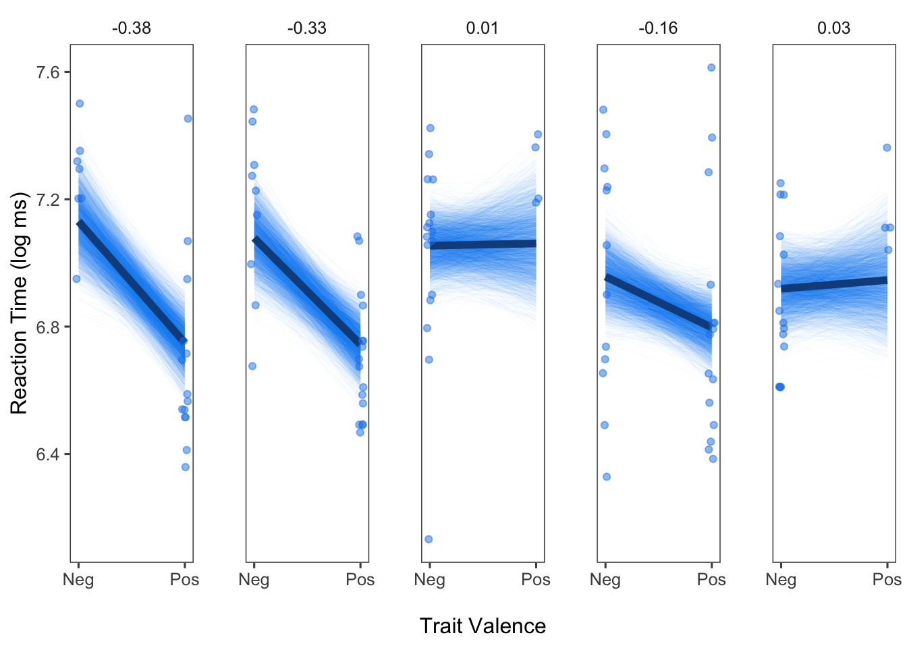

Panel Plots Showing Subject-Specific Effects and Posterior Draws
- Overview
- Load Libraries
- Read in Data
- Fit Bayesian Mixed Effects Model
- View the Model Summary
- Set up Dataframe to Set Values of
valenceEto Generate Predictions from Model - Predict Y Values using model
- Extract the Posterior Draws
- Pull Out Subject-Specific Posterior Samples for Intercept and Slope
- Merge Datasets with Posterior Samples for Person-Specific Intercept and Slope
- Merge Datasets with Place-holder Dataframe
- Select 5 Example Participants
- Set up Labels for Panel Plots
- Plot Results
- Add Remaining Elements to Plots
- Why Make Panel Plots with Posterior Draws?
Overview
In this demo, we will create subject-specific panel plots. These plots will show the raw observations and model predicted causal effect for each participant. In addition, we will set this up as a Bayesian model and also plot all the draws from the posterior distribution. These plots will allow us to visualize the between-subject heterogeneity in our effects as well as the precision/certainty in the estimation of these effects.
Load Libraries
For this demo, we will use the brms package to fit the model and ggplot2 to generate the panel plots. We will also use additional packages to assist with data manipulation (dplyr, tidyr) and plot aesthetics (ggthemes).
library(brms)
library(tidyverse)
library(ggplot2)
library(ggthemes)Read in Data
In this demo, we will draw on Study 1 from Causal Processes in Psychology are Heterogeneous (Bolger, Zee, Rossignac-Milon, & Hassin, 2019, Journal of Experimental Psychology: General). You can find the full paper here.
In this study, my colleagues and I asked participants to indicate whether each of a series of trait adjectives was self-relevant or not, as quickly as possible. Half of the adjectives were positive, and the other half were negative; thus trait valence was the independent variable, and reaction time (in log milliseconds) was the dependent variable. Our goal was to not only estimate the average causal effect of trait valence (i.e., the effect for the typical person) but to also use a mixed effects model (aka a multilevel model) to assess the degree to which participants varied in this effect.
We will read in the data directly from my Github repository heterogeneityproject.
urlfile <- 'https://raw.github.com/kzee/heterogeneityproject/master/heterogeneity_dataset1_traitvalence.csv'
rndt <- read.csv(urlfile)We will then use the same data preparation/cleaning steps as those used for the paper. First, we will subset the dataset so that only trials with traits that were endorsed as self-relevant were selected. We will then filter out any trials falling more than 3 SD from the grand mean and also remove three participants who did not endorse any negative traits as self-relevant. Our final dataframe is d.
rndt_sr <- subset(rndt, response.keys == "up") # subset to only select traits endorsed as self-relevant
rndt_sr$rt.z <- scale(rndt_sr$rt) #Create z-scores for RT
rndt_srz <- subset(rndt_sr, rt.z < 3) #within +3 SD of the mean RT
# New dataset without the three participants who did not select any negative words
rndtz <- rndt_srz[!(rndt_srz$id %in% c(250, 257, 272)), ]
d <- rndtzFit Bayesian Mixed Effects Model
Next, we will fit a Bayesian model in which reaction time (in log milliseconds) is predicted as a function of trait valence (-.5 = Negative, +.5 = Positive). Importantly, we will also allow each subject to have their own intercept and slope, given by (valenceE | id) in the model syntax. We will also set a seed to ensure reproducibility of this analysis.
fit <- brm(logrt ~ valenceE + (valenceE | id), data = d, seed = 111)View the Model Summary
As the results summary shows, the slope of valenceE is -0.16 log ms for the typical person. However, there is also substantial between-subject heterogeneity in this effect, given by the standard deviation of this effect, 0.13.
fit## Family: gaussian
## Links: mu = identity; sigma = identity
## Formula: logrt ~ valenceE + (valenceE | id)
## Data: d (Number of observations: 1317)
## Samples: 4 chains, each with iter = 2000; warmup = 1000; thin = 1;
## total post-warmup samples = 4000
##
## Group-Level Effects:
## ~id (Number of levels: 59)
## Estimate Est.Error l-95% CI u-95% CI Rhat Bulk_ESS
## sd(Intercept) 0.17 0.02 0.14 0.21 1.00 810
## sd(valenceE) 0.13 0.02 0.08 0.18 1.00 1257
## cor(Intercept,valenceE) -0.08 0.19 -0.44 0.30 1.00 1802
## Tail_ESS
## sd(Intercept) 1720
## sd(valenceE) 1262
## cor(Intercept,valenceE) 2548
##
## Population-Level Effects:
## Estimate Est.Error l-95% CI u-95% CI Rhat Bulk_ESS Tail_ESS
## Intercept 6.87 0.02 6.82 6.91 1.00 601 1209
## valenceE -0.16 0.02 -0.21 -0.12 1.00 2420 2885
##
## Family Specific Parameters:
## Estimate Est.Error l-95% CI u-95% CI Rhat Bulk_ESS Tail_ESS
## sigma 0.24 0.01 0.23 0.25 1.00 4690 3302
##
## Samples were drawn using sampling(NUTS). For each parameter, Eff.Sample
## is a crude measure of effective sample size, and Rhat is the potential
## scale reduction factor on split chains (at convergence, Rhat = 1).Set up Dataframe to Set Values of valenceE to Generate Predictions from Model
To help us generate model predicted effects for each participant, we will set up an empty dataframe in which we will "catch" id numbers and the specific levels of each condition. This will result in a dataframe that consists of two rows per participant for valence: one for negative (-.5) and one for positive (.5).
out <- NULL
for (i in unique(d$id)) {
cseq <- data.frame(
valenceE = c(-.5, .5),
id = i)
out <- rbind(out, cseq)
}
head(out)## valenceE id
## 1 -0.5 201
## 2 0.5 201
## 3 -0.5 202
## 4 0.5 202
## 5 -0.5 204
## 6 0.5 204Predict Y Values using model
We will then use this new dataframe (out) to generate fitted (model predicted) values for each participant. Note that both predict() and fitted() can be used with brm model objects. fitted() takes into account uncertainty about the fitted regression line, whereas predict() takes into account both uncertainty about the fitted regression line and the data. For the purposes of this demo, we will use fitted(). We will also specify re_formula=NULL so that subject-specific predicted slopes will be generated.
outpred <- cbind(out, fitted(fit, out, re_formula=NULL))
head(outpred)## valenceE id Estimate Est.Error Q2.5 Q97.5
## 1 -0.5 201 6.824940 0.06934551 6.688466 6.957002
## 2 0.5 201 6.762387 0.05825105 6.649730 6.877772
## 3 -0.5 202 6.807296 0.06740596 6.670958 6.939203
## 4 0.5 202 6.643997 0.05451962 6.537718 6.748403
## 5 -0.5 204 6.803471 0.09478499 6.622330 6.998008
## 6 0.5 204 6.645416 0.05409830 6.538424 6.750540Extract the Posterior Draws
Because we want to plot both the subject-specific model predicted effects and the draws from the posterior distribution, we will extract and save into a new object the posterior returned from the model.
p <- posterior_samples(fit)Pull Out Subject-Specific Posterior Samples for Intercept and Slope
Next, we will pull out the posterior samples for the intercept and slope for each participant. We will also put these posterior samples into long format (one row per sample, resulting in many rows per participant). We will also add new columns: one each for the person-specific mean for the slope and intercept, and one indicating which draw (sample) each row corresponds to.
To do this, we will use the help of the dplyr and tidyr packages, which are both loaded with tidyverse. We will first select out the columns that correspond to the fixed effects (indicated with the prefix b_) as well as the log posterior (lp) or random effects (sd and cor). We will then select in any columns that contain Intercept. By having selected out the columns in the previous step, we are left with person-specific draws for the intercept. The next step from here is to use gather from the tidyr package to put the person-specific posterior draws into long form. We will use mutate to add the new columns described above for the person mean intercept (and slope in the next block of code) and number of draws. Finally, we will use the parse_number function form readr to eliminate any non-numeric characters from our id column, as the id column has been populated with a string corresponding to the column names for the posterior draws in brms (e.g., r_id[201,Intercept] becomes 201). We can then repeat the same steps to get the slope of valenceE.
pint <- p %>% dplyr::select(-contains("b_"), -contains("lp"),
-contains("sd"), -contains("cor")) %>%
dplyr::select(contains("Intercept")) %>%
gather(key = "id", value = "int") %>%
group_by(id) %>%
mutate(
mint = mean(int),
draw = 1:4000) %>%
ungroup() %>%
mutate(
id = readr::parse_number(id)
)
pslp <- p %>% dplyr::select(-contains("b_"), -contains("lp"),
-contains("sd"), -contains("cor")) %>%
dplyr::select(contains("valenceE")) %>%
gather(key = "id", value = "slp") %>%
group_by(id) %>%
mutate(
mslp = mean(slp),
draw = 1:length(id)) %>%
ungroup() %>%
mutate(
id = readr::parse_number(id)
)Merge Datasets with Posterior Samples for Person-Specific Intercept and Slope
Next, we will merge the datasets we created that contain the person-specific posterior samples for the intercept and slope. We will do this twice: Once in which we add a column for valenceE and set it to -.5 (negative trait valence), and once in which we add a column for valenceE and set it to +.5 (positive trait valence). Finally, we will stack these two dataframes on top of each other using rbind
pintslpneg <- full_join(pint, pslp, by = c("id", "draw")) %>%
mutate(valenceE = -.5)
pintslppos <- full_join(pint, pslp, by = c("id", "draw")) %>%
mutate(valenceE = .5)
pintslp <- rbind(pintslpneg, pintslppos) Merge Datasets with Place-holder Dataframe
Then, we will return to the place-holder dataframe, out, that we created in the loop above. Recall that this dataframe contains two rows per subject, one for negative valence and one for positive valence. We will merge this place-holder dataframe with the dataframe we created above, containing the person-specific posterior draws. This will give us the necessary values for valence to generate predictions for every posterior draw for the intercept and slope for each subject, resulting in 2000 possible effects per subject.
We will then compute the intercept and slope for each posterior draw by adding in the values for the fixed effects. Finally, we will generate predicted values by adding the intercept to valenceE multiplied by the slope (following the basic regression equation for a specific trial for a specific person). The column pred now contains predicted values for each person for a specific draw from the posterior distribution.
postd <- full_join(out, pintslp, by = c("id", "valenceE"))
postd$newint <- postd$int + fixef(fit)["Intercept", "Estimate"]
postd$newslp <- postd$slp + fixef(fit)["valenceE", "Estimate"]
postd$pred <- postd$newint + postd$valenceE*postd$newslpSelect 5 Example Participants
This next step is optional: We will select 5 participants to display in our panel plots. Alternatively, you could choose to generate panel plots for all the participants in your sample. We will plot the effects for 5 participants here for two reasons: (1) These are the same 5 participants featured in Figure 2 of Bolger, Zee, Rossignac-Milon, & Hassin (2019), and they were selected because they correspond to the participants with the two strongest effects, one participant who showed the average effect, and the two participants who showed the weakest effects; and (2) Plotting the posterior draws is computationally intensive, so it would probably take awhile to generate plots for everyone in the sample.
First, we will define a function for selecting these five participants from a particular dataframe. We can use this function to pull out these five participants from postd, which contains the posterior draws. We can then reorder the dataframe so stronger (more negative) slopes precede weaker (flatter) slopes.
sub5 <- function(x){subset(x, id == 208 | id == 222 | id == 241 | id == 239 | id == 247)}
sub <- sub5(postd) %>% mutate(id = reorder(id, mslp)) %>% arrange(mslp)Set up Labels for Panel Plots
This next step is also optional: We will set up labels for the panel plots that show the model predicted slope for each participant, rather than using the default setting in ggplot, which would display the ID number.
To do this, we first set up a function for rounding subject-specific model predicted slopes to 2 decimal places (and adding in the fixed effect).
Next, we will effectively attach a slope value to each ID number that we will plot, and save this into an object called to_string to use in a future plotting step.
pasteround <- function(x){
x2 <- unique(x)
paste(round(x2 + fixef(fit)["valenceE", "Estimate"], 2))
}
to_string <- as_labeller(c(`208` = pasteround(subset(sub, id == 208)$mslp),
`239` = pasteround(subset(sub, id == 239)$mslp),
`222` = pasteround(subset(sub, id == 222)$mslp),
`241` = pasteround(subset(sub, id == 241)$mslp),
`247` = pasteround(subset(sub, id == 247)$mslp))) Plot Results
Finally, we can now plot our results! We will aim to plot three pieces of information for each of the five participants we selected: (1) We will plot every single draw from that participant's posterior distribution (contained in the dataframe postd, which has already been subsetted to contain our five focal participants in the dataframe sub), (2) we will plot the model predicted effect for that participant (contained in that dataframe outpred), and (3) we will plot that participant's raw data (contained in the original dataframe, d).
We will first add empty columns called draw to dataframes outpred and d to override issues with plotting.
outpred$draw <- NA
d$draw <- NANext, we will plot just the first piece of information: posterior draws. We will use ggplot to do this. We begin by filling in our dataframe, sub, and specifying that we want to plot valenceE against pred, the predicted values for each posterior draw. We will also want to set group to draw, which means that each draw from the posterior will be plotted one on top of the other. The next line, geom_line, indicates that we want to have a line connecting values of pred. We set the size to be small and the alpha (transparency) to be low so that we can see all of the individual posterior draws clearly. We can then use facet_wrap as a way to ask ggplot to put each participant (given by id) into their own plot. The remaining lines of code are for aesthetic purposes (e.g., labeling the axes).
panelggpost <- ggplot(sub, aes(x = valenceE, y = pred, group = draw)) +
geom_line(size = .1, alpha = .05, color = "dodgerblue2") +
facet_wrap("id", nrow = 1, labeller = to_string) +
theme_few() + xlab("\nTrait Valence") + ylab("Reaction Time (log ms)") +
scale_x_continuous(breaks=seq(-.5, .5, 1), labels = paste0(c("Neg", "Pos"))) +
theme(panel.spacing = unit(2, "lines")) Let's see what we have plotted so far!
panelggpost
Looks good! We can see the posterior draws for each person, given by each individual line. Even without having plotted the model predicted effect for each person yet, we can already get a sense of which participants show pronounced trait valence effects, and which participants do not.
Add Remaining Elements to Plots
Now, we can add in the remaining pieces of information: The model predicted effect for each person and the raw data points.
We can simply add on to the plot we already created above. We can used the sub5() function that I created above to select only the five participants of interest from the dataframes that contain the additional information we need. The first new line, geom_line is used to plot the model predicted effect for each person. We can make this line larger so that it stands out when plotted on top of the posterior draws. The subsequent line, geom_point, adds in the raw data points for each person. We can use position_jitter to add a little random noise into the plot so that the points aren't completely overlapping (note that this does not change anything about the data or our model).
sub_c <- sub5(outpred)
sub_d <- sub5(d)panelggpost2 <- panelggpost +
### New elements for plot here:
geom_line(data = sub_c, aes(x=valenceE, y=Estimate), color = "dodgerblue4", size = 2) +
geom_point(data = sub_d, aes(x = valenceE, y=logrt), alpha = .7,
position = position_jitter(h = 0, w = 0.03), color = "dodgerblue2")
panelggpost2
And there it is! We have a very nice set of panel plots for five participants.
Why Make Panel Plots with Posterior Draws?
As seen from the steps above, generating subject-specific panel plots with posterior draws is somewhat labor intensive. However, I believe that the value of these plots make them well worth the effort. First, as implied in our paper, displaying individual-specific effects generally (even without posterior draws) helps illustrate the importance of paying attention to between-subject heterogeneity in effects. From the panel plots, we can easily see that some participants show especially strong effects of the trait valence manipulation, whereas others do not. By adding in the posterior draws, we can also get a sense of the precision/uncertainty of our estimates. Unlike the typical way of depicting a 95% CI, in which there is a uniform swath of color around the fitted line, displaying the posterior draws makes it more apparent that there is often a concentration of possible values from the posterior, indicated by the darker regions in the plots we just generated. Seeing the individual draws also helps to reinforce some of the key ideas in Bayesian statistics compared Frequentists statistics, namely that we end up with a distribution of possible estimates rather than a single estimate. This also allows us to see what is effectively the 100% credibility interval for each person, as every posterior draw is displayed.
View .Rmd source code
updated October 24, 2019
The material above reflects the best of my knowledge on this topic. Please be sure to check your results and code carefully.